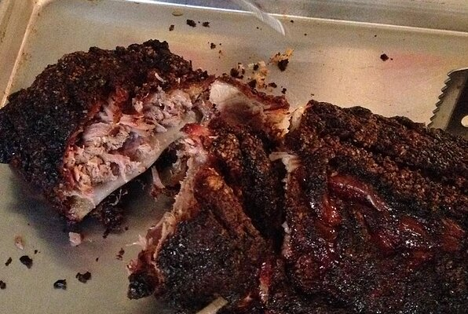

Memphis Style Back Ribs

Description
Extra tender pork back ribs are slowly grilled with sweet and spicy rub and yellow mustard sauce.
Ingredients
- ¼ cup brown sugar
- ¼ cup kosher salt
- 2 teaspoons chilli powder
- 1 ½ teaspoons dry mustard
- 1 teaspoon black pepper
- 1 teaspoon celery salt
- 2 racks smithfield extra tender pork back ribs, membrane removed
- ¼ cup prepared yellow mustard
- Apple juice, in a spray bottle
Steps
- About 30 minutes before smoking, make the dry rub. Combine all ingredients in a small bowl; mix well.
- Spread both sides of ribs with yellow mustard and sprinkle with dry rub. Let stand at room temperature for 30 minutes.
- Heat charcoal or gas grill for indirect cooking at 250 degrees F. Place the ribs, meaty side up, over a drip pan and cook for 4 to 6 hours until very tender. Spritz ribs occasionally with water or apple juice using a spray bottle. Add about 12 coals to a charcoal grill every 45 minutes or so to maintain the heat.
- Let ribs stand 10 to 15 minutes before serving.